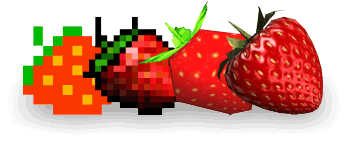

Während deiner Reise durch die Levels
begleitest du Bit Boy Kubi durch seine
zahlreichen Abenteuer in den verschiedenen Bit-Generationen, die du nach und
nach erforschst um alle von Kubis Bit Boy-Freunden zu retten.
Ziel
Rette in jedem Level all deine
Bit-Freunde und weiche bösartigen Monstern
aus.
Sammle leckere Früchte für Bonuspunkte und erspiele in jeder
Bit-Generation einen Top-Score.
Bit-Ära
Kubis Abenteuer findet in den verschiedenen Generationen der
Videospielgeschichte statt. Im Laufe seiner Reise durchquert Kubi die
4-Bit,
8-Bit, 16-Bit, 32-Bit und 64-Bit-Ära, bis er zuletzt in die 128-Bit-Ära
zurückkehrt.

Hast du alle Freunde aus einer Ära gerettet, kannst du vom
Hauptmenü aus die Zeitreise in die nächste Generation antreten.
High-Scores
Das Hauptziel des Spiels ist es für jede
Bit-Generation einen High-Score zu erspielten.
Am Titelbildschirm wird nur der allerbeste Score einer jeden
Generation angezeigt, also sei ein echter Hardcore-Gamer und
kämpf dich an die Spitze!
Warp-Modus
Sobald du eine ganze Bit-Generation gemeistert hast, kannst du für diese
Generation den Warp-Modus auswählen.
Im besonders kniffligen Warp-Modus ist
es dein Ziel, so viele Zeitdiamanten wie nur möglich einzusammeln.
Hier
gibt es keine Möglichkeit dich der Monster zu entledigen. Wirst du von einem
berührt, wirst du unverzüglich in den nächsten Level gewarpt, ob du willst
oder nicht.


 Sammle leckere Früchte für Bonuspunkte und erspiele in jeder
Bit-Generation einen Top-Score.
Sammle leckere Früchte für Bonuspunkte und erspiele in jeder
Bit-Generation einen Top-Score. Das Hauptziel des Spiels ist es für jede
Bit-Generation einen High-Score zu erspielten.
Das Hauptziel des Spiels ist es für jede
Bit-Generation einen High-Score zu erspielten. Sobald du eine ganze Bit-Generation gemeistert hast, kannst du für diese
Generation den Warp-Modus auswählen.
Sobald du eine ganze Bit-Generation gemeistert hast, kannst du für diese
Generation den Warp-Modus auswählen.  Hier
gibt es keine Möglichkeit dich der Monster zu entledigen. Wirst du von einem
berührt, wirst du unverzüglich in den nächsten Level gewarpt, ob du willst
oder nicht.
Hier
gibt es keine Möglichkeit dich der Monster zu entledigen. Wirst du von einem
berührt, wirst du unverzüglich in den nächsten Level gewarpt, ob du willst
oder nicht.